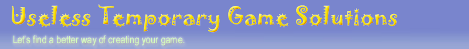

|
|
 |
|
|
Hosted by:
|
|
|
|
|||
Long Name |
Useless Temporary Game Solutions (See An Overview, Docs & Examples...) |
Short Name |
|
License |
BSD (Read License Terms...) |
Copyright |
(c) 2005, Radoslaw "KooLAS" Kolasinski (koolas@gmail.com) |
Documentation |
Useless library: (C++)
GUI definition language: (xml)
|
Screenshots |
(See gallery...) |
Downloads |
Available packages:
(Goto download area...)
|
Repository |
|
Starting Examples |
The easiest way to watch examples:
|
Build Prerequisites |
Before you build UTGS you'll need following steps:
|
Project Description |
Mission There are many libraries doing similar things like UTGS does. But I could rarely find anything friendly to developers. Those Other libraries frequently introduce very unclear interfaces. One will surely get lost in those plenty methods per class. Here in UTGS I introduce very simple and short interfaces (See C++ concepts overview...). In addition it gives scripting language, that is easy to learn, and able to control the user interface. Using this language you may even write your whole application. (See KooLiXP overview...). Project Scope Free or Commercial Multimedia Applications & Games. OverviewTo get started read following documents: To see documents listed above you'll need XML/XSLT capable browser.Virtues
(*) Currently supported: Win32, DirectDraw7, OpenGL, DirectShow, Ogg/Vorbis Features
Assumptions
|
References |
|